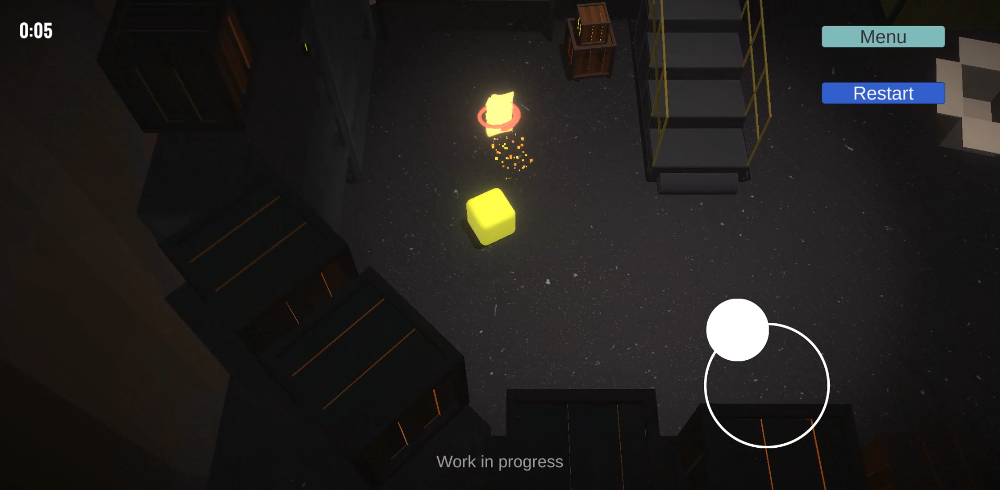
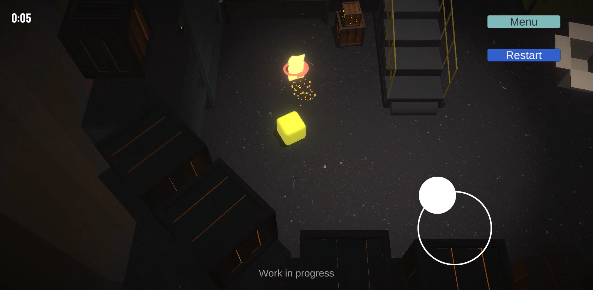
[Geliştirilmekte]
Bulmaca ve platform unsurlarını içeren bir mobil oyundur. Oyuncu, ruh bulmuş bir kutu karakteri kontrol eder ve saati andıran 12 bölümden oluşan bir maceraya atılır. Oyunun amacı, bulmacaları çözmek, hikâye unsurlarını toplamak, platformlardan geçmek, engelleri aşmak ve çıkışı bulup bölümleri tamamlamaktır.
12 bölüm sonunda oyuncular ruh kutusunun yaşam süresini diğer oyuncularınkiyle menü ekranında karşılaştırabilecek.
2022
 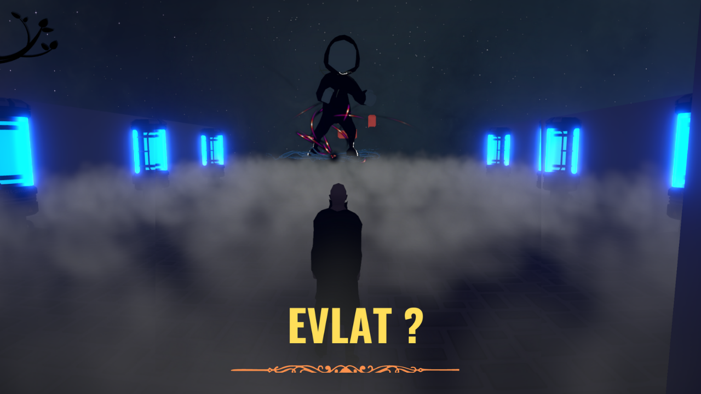
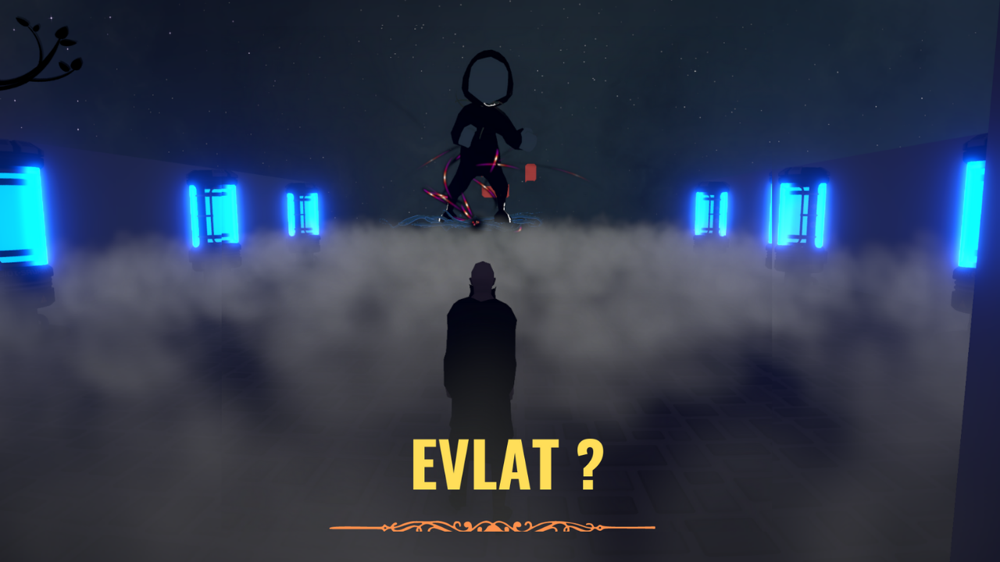
Mağara GameJam #5 | 72 Saat
"Kötü adam sensin" temalı, baba karakteri yönlendirdiğimiz ve oğlunun enerjisini alarak yok ettiğimiz bir oyun.
2022
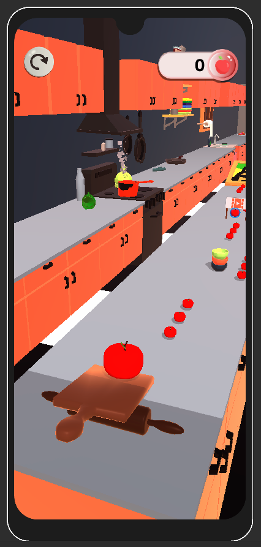
Google Oyun ve Uygulama Akademisi Bootcamp sürecinde takımca hazırladığımız hypercasual oyun.
Yuvarlanan meyveyi sağa-sola yönlendirerek diğer meyveleri toplayıp büyüttüğümüz ve bölüm içinde toplanan meyvelerin karışımıyla mixere girip meyve suyu oluşturduğumuz oyun.
2022
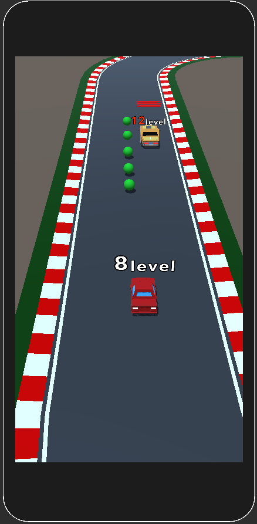
Aracımız güzergâhta ilerlerken, parmağımızı kaydırarak sağa ve sola yönlendiriyoruz. Diğer araçlar kendisi bitiş çizgisine ilerliyor.
Yeşil toplar araç levelini arttırırken kırmızı şeritler level düşürüyor. Yüksek level araca çarpınca kaybediyor, düşük levele çarpınca level arttırıyoruz.
2022
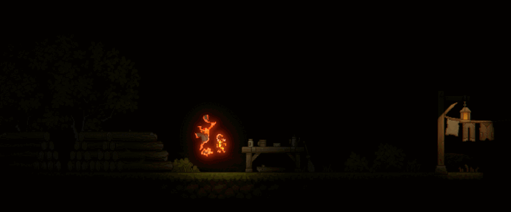
Mağara GameJam #4 - 72 Saat
WASD ile kontrol ettiğimiz, çift zıplama yeteneği olan karakteri kullanarak ilerlediğimiz bulmaca tabanlı oyun.
2022
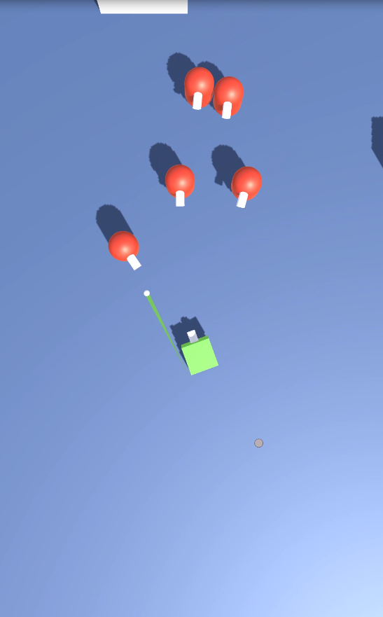
Mobile hazırlanmış bir prototip. Parmak hareketiyle ilerleyen karakter, menzile giren en yakın düşmana otomatik saldırarak sona ulaşmaya çalışır.
2021
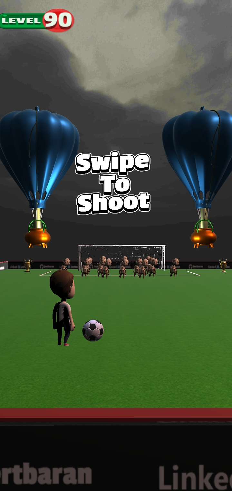
Parmak hareketine ve bekletme süresine oranlı şut atarak level atladığımız bir oyun.
2021
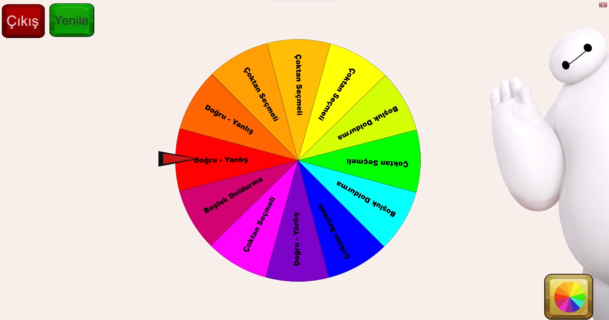
Edebiyat temalı sorular barındıran, öğrenci etkileşimli çarkıfelek oyunu. Her soru tipinde hazırlanmış sorular çarkıfelekte yerleşik bulunur. Öğrenci başlatıp durdurur ve gelen soruyu yanıtlar.
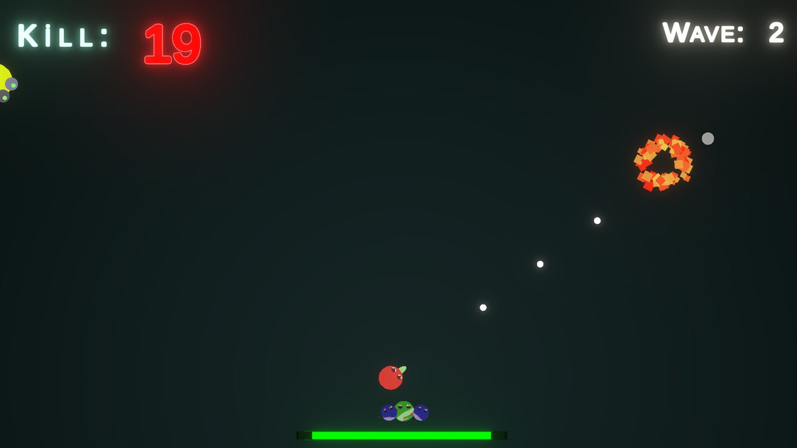
5 aşamada gelen düşmanlara ateş ederek patlatıp, yüksek skor yapmaya çalıştığımız bir oyun.
Unity Leaderboard, Unity Analytics, Unity LevelPlay ADS(IronSource, Unity Ad, Admob)
2020
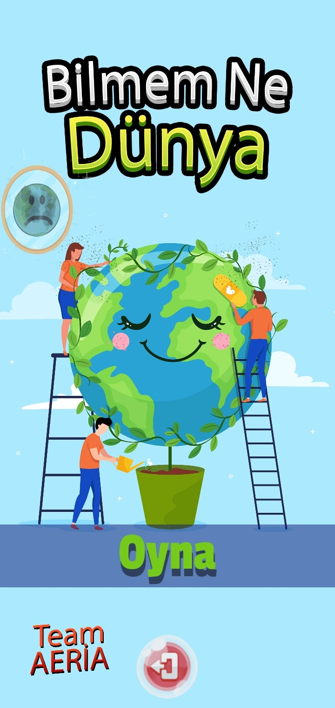
Sürekli artan küresel ısınmayı butona basıp, müzik eşliğinde ağaç dikerek azaltmaya çalıştığımız bir oyun. Bitiş ekranında da TEMA vakfı fidan bağış ekranına gitmeye teşvik ediliyor.
2020
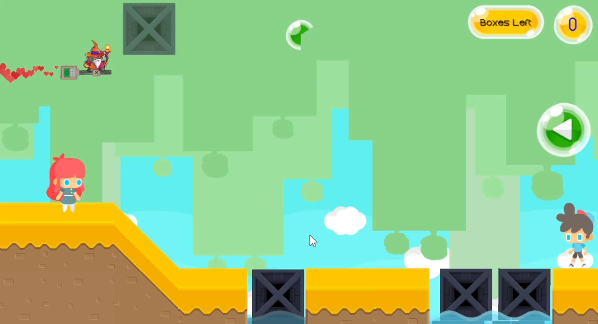
Seed GameJam oyunum. Karakterlerimiz kavuşmak ister. Çukurlara kutu koyarak erkek karaktere yol yapıp birbirine kavuşturmaya çalışırız.
2019
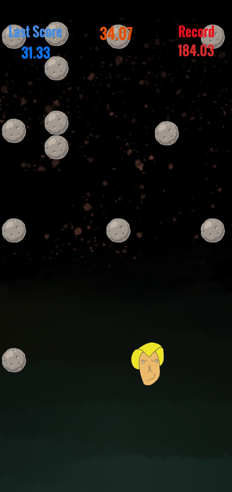
Yukarıdan üzerimize doğru düşen meteorlardan, sıyrılarak yüksek skor yapmaya çalıştığımız bir oyun.
2018
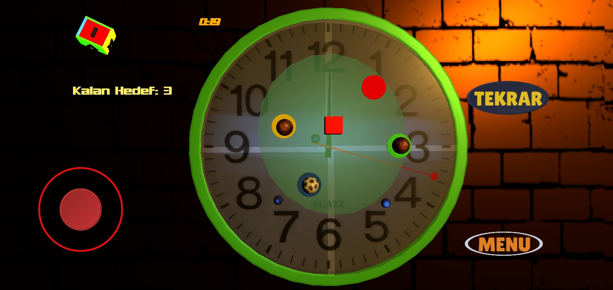
Joystick ile kutu karakteri yönlendirerek ilerlediğimiz bir oyun. 8 leveli tamamlanmış bir bulmaca ve denge oyunu.


{kind=link}
{kind=link}
{kind=link}
{kind=link}
{kind=link}
{kind=link}
{kind=link}
{kind=link}
{kind=link}
{kind=link}
![Sevenleri Kavuştur [GameJam]](images/KavusturGame.png){kind=link}
{kind=link}
{kind=link}